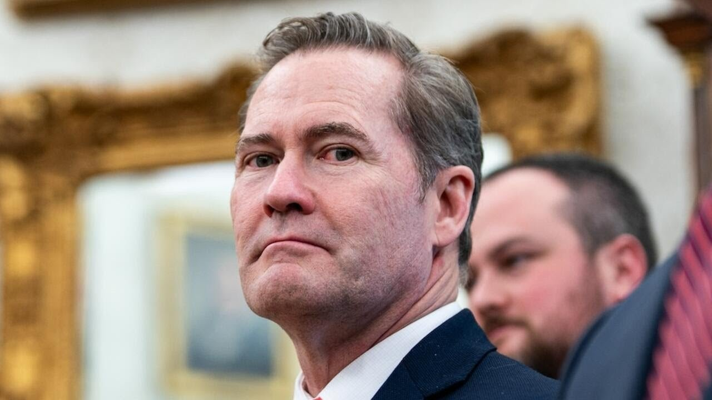

来B站一起耍【Global每日英语简报】
【Why Mike Waltz is out as national security adviser】
Summary: 为什么迈克·沃尔茨不再担任国家安全顾问
摘要： A major shakeup is happening in the Trump White House as National Security Adviser Mike Waltz and his top deputy depart, though Waltz will be nominated as UN ambassador, while Secretary of State Marco Rubio takes over as interim security adviser.

⏱️ Estimated Reading Time: 5 min
Yeah, you know, it's probably adjacent to talks because it's critical to point out this is not a peace deal.
[Music] Hello and thank you for joining us.
There are no security guarantees in that deal and President Zilinsky had been point uh pushing for that.
A major shakeup is happening in the Trump White House.
The Treasury Secretary said it shows the US is committed to facilitating the end of this cruel and senseless war.
President Trump's National Security Adviser Mike Waltz and his top deputy at the National Security Council are leaving their posts.
But having said that, look, it pulls the United States closer to Ukraine.
However, Waltz, a former congressman and retired Army Green Beret, isn't out of the administration.
So it's it's definitely a step forward.
President Trump posted on Truth Social Thursday, writing in part, quote, "I am pleased to announce that I will be nominating Mike Waltz to be the next United States ambassador to the United Nations."
But none of this was contingent on any kind of peace negotiations.
He added, "Mike Wallace has worked hard to put our nation's interests first. I know he will do the same in this new role."
I mean, what we obviously don't know exactly what was said in that meeting between Trump and Zalinski and St. Peters, but but what changed for them?
The president also announced Secretary of State Marco Rubio will take over as the interim national security adviser in addition to his role at the State Department.
You know, Ukraine understands today, tomorrow, 10 years from now, they will rely on United on the United States militarily, from a commercial standpoint.
Just a couple of his many hats.
This is about reconstruction, about repar reparations.
We'll explain.
That's really not the deal.
Waltz's departure comes about 6 weeks after it was revealed he mistakenly included a journalist on a signal group chat with other top officials discussing military strikes in Yemen.
They know they are sitting on this gold mine of natural resources and it gives them an opportunity, some leverage and they need the leverage in order to get closer to the United States commercially and militarily.
We have team coverage on this story.
It was floated a few months ago by the Trump administration, but Ukraine is looking for ways to be valuable.
CBS News chief White House correspondent Nancy Cordez and CBS News senior national security correspondent Charlie Dagoda are with us.
So getting closer to an EU partnership.
Let's start with Nancy Cordez following the president in Tuscaloosa, Alabama where he is speaking at the University of Alabama's commencement ceremony.
Okay, Charlie Daga, thanks so
Nancy, what are you hearing about why Walt is out as national security adviser and in for UN ambassador?